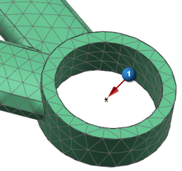

问题
1
2
在使用载荷传递命令捕捉运动仿真文件中的载荷后，下一步该做什么？
请选择一个答案。
在下面的例子中，载荷传递的载荷作为一个节点被导入到有限元模型中，该节点位于运动仿真中定义运动副的位置(图中的1)。实际上，载荷将不会影响有限元分析中的模型，您如何才能将载荷连接到模型的剩余部分？

请选择一个答案。
错误！
正确！
在捕捉载荷之后，并且在切换至高级仿真应用模块以导入运动载荷之前，您需要保存运动仿真。此外，捕捉的载荷将不会被保存。
要将载荷传递节点连接至模型的剩余部分，可以使用1D 接触命令来创建从单一节点到曲面上多个节点的约束，或者创建单独的刚体单元(比如 RBE2单元)。